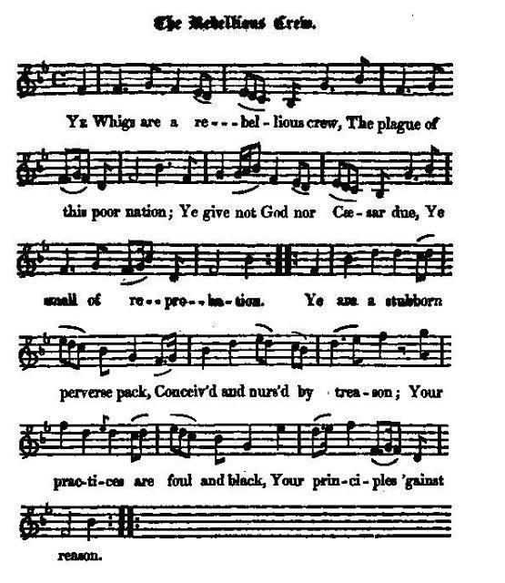

The Rebellious Crew
Un tas de rebelles
from the
The True Loyalist"
page 80 (1779)
and James Hogg's "Jacobite Relics" vol I, N°68, (1819)
Tune - Melodie
"Nancy's to the green wood gane" or "Scornful Nancy"
from Hoggg's "Jacobite Relics" N°68
A short excerpt from "Scornful Nancy"
Sequenced by Christian Souchon
|
To the tune
NANCY'S TO THE GREENWOOD GANE. Scottish. Appears in the Munro's collection of 1732, and the McLean Collection published by James Johnson in Edinburgh in 1772. It also was used by Allan Ramsay for his ballad opera "The Gentle Shepherd" (1725). Source: "The Fiddler's Companion" (see links). Hogg writes: "I copied this song from an old printed Ballad which I found among Mr Walter Scott's original Jacobite papers. And the tune I took down from the singing of Mr Thomas Brown, who said he had heard the song sung to it." Source: Hogg's "Jacobite Relics". |
 |
A propos de la mélodie
NANCY S'EN FUT AU BOIS VERT. Mélodie écossaise publiée dans le recueil de Munro en 1732 et dans celui de McLean de James Johnson à Edimbourg en 1772. Allan Ramsay l'utilisa dans son "ballad opera" le Gentil Bergerz (1725). Source: "The Fiddler's Companion" (cf.liens). Hogg écrit: "J'ai copié ce chant sur une vieille feuille imprimée que j'ai trouvée parmi les papiers Jacobites originaux recueillis par M. Walter Scott. Quant à la mélodie, elle m'a été chantée par M. Thomas Brown, qui affirme l'avoir entendue accompagner ces paroles." Source: Hogg's "Jacobite Relics". |

|
THE REBELLIOUS CREW.
1. Ye Whigs are a rebellious crew, The plague of this poor nation; Ye give not God nor Caesar due; Ye smell of reprobation. Ye are a stubborn perverse pack, Conceiv'd and nurs'd by treason; Your practices are foul and black, Your principles 'gainst reason. 2. Your Hogan Mogan [1] foreign things, God gave them in displeasure; Ye brought them o'er, and call'd them kings; They've drain'd our blood and treasure. Can ye compare your king to mine, Your Geordie and your Willie ? Comparisons are odious, A toadstool to a lily. 3. Our Darien can witness bear, And so can our Glencoe, sir; Our South Sea it can make appear, What to your kings we owe, sir. We have been murder'd, starv'd, and robb'd, By those your kings and knav'ry, And all our treasure is stock-jobb'd, While we groan under slav'ry. 4. Did e'er the rightful Stuarts' race (Declare it, if you can, sir,) Reduce you to so bad a case ? Hold up your face, and answer. Did he whom ye expell'd the throne, Your islands e'er harass so, As these whom ye have plac'd thereon, Your Brunswick and your Nassau ? 5. By strangers we are rohb'd and shamm'd, This you must plainly grant, sir, Whose coffers with our wealth are cramm'd, While we must starve for want, sir. Can ye compare your kings to mine, Your Geordie and your Willie ? Comparisons are odious, A bramble to a lily. 6. Your prince's mother did amiss (was a whore), [2] This ye have ne'er denied (cannot deny) , sir, Or why liv'd she without a kiss (in yonder tower) , Confin'd until she died, sir ? Can ye compare your queen to mine ? I know ye're not so silly : Comparisons are odious, A dockan to a lily. 7. Her son is a poor matchless sot, His own papa ne'er lov'd him; And Feckie [3] is an idiot, As they can swear who prov'd him. Can ye compare your prince to mine, A thing so dull and silly (Your F[ec]kie and your W[ill]lie) ? Comparisons are odious, A mushroom to a lily. Source: Jacobite Minstrelsy, published in Glasgow by R. Griffin & Cie and Robert Malcolm, printer in 1828. It is, apart from a few words that don't really change the sense (italics), identical with the "True Loyalist" version. |
UN TAS DE REBELLES
1. O Whigs, la plaie de la nation, Vous n'êtes qu'un tas de rebelles. Dieu, ni César ne recevront Obole de votre escarcelle. En tant que dignes rejetons De votre mère la traîtrise, Vos dogmes défient la raison. Vos actes font qu'on vous méprise. 2. Ces "Hogan Mogan" étrangers Que Dieu créa dans sa colère, Et que vous avez couronnés, C'est exsangues qu'ils nous laissèrent. Comment osez-vous comparer A notre roi, George ou Guillaume, Et la même toise appliquer A ce géant et à ces gnomes? 3. Comment ils règnent, Darien Et Glencoe de cela témoignent. Notre Mer du Sud sait combien Tous sont à vos rois redevables. Massacrés, affamés, grugés Par eux et par leur valetaille Tous, nous gémissons entravés Et n'avons plus un sou qui vaille. 4. Vîtes-vous jamais les Stuart - Qui pourrait donc me contredire? - Concevoir de tels traquenards? Oui, je veux vous l'entendre dire. Le roi que vous avez chassé Du trône a-t-il ruiné ces îles Comme ceux qu'on y vit monter: Ce Nassau, ce Brunswick débile? 5. Car, vous n'en disconviendrez point, Ces étrangers nous dévalisent. Leurs coffres sont pleins de nos biens Et nous, la faim nous martyrise. George, Guillaume et notre roi: Lorsque ces trois noms on prononce On désigne tout à la fois Un lis et un buisson de ronces! 6. Vous-mêmes en êtes d'accord: La mère de George [2] est fautive ( (George a pour mère une catin) . Pourquoi, sinon, jusqu'à sa mort, Seule, fallait-il qu'elle vive (Fut-elle enfermée loin des siens) ? Il est odieux de comparer Votre reine avec la mienne. Autant dire que la beauté D'un lis et d'un jonc est la même. 7. Son fils est l'empereur des sots, Détesté de son propre père. Quant à Feckie [3], c'est un idiot Affirment ceux qui l'approchèrent. Ce prince terne et pâlichon Vaut-il qu'au mien on le compare (Fred, Guillot vaudraient-ils les Stuart) ? Autant dire qu'un mousseron Et un lis ont le même charme. (Trad. Christian Souchon(c)2009) |
|
[1]
Hogan Mogan
: Cant terms for the Dutch words "Hough Magedige", signifying "high and mighty". For another instance of "English-Dutch", see
Willie Winkie's Testament
. The "Hogan Mogan foreign things" are the Dutch and German princes the Whigs supported on the throne.
[2] Your price's mother : "Jacobite Minstrelsy" sums up the cautious view historians took of the Königsmark case in 1828: (cf. Came ye frae France?" ) "George I. while electoral prince, married his cousin Sophie Dorothea, only child of the Duke of Celle. She was very beautiful, but her husband treated her with neglect, and had several mistresses. This usage seems to have disposed her to retaliate, by indulging in a little external gallantry. The celebrated Swedish Count Königsmark being at that period at Hanover, became the unfortunate object of her coquetry; and, although no criminal intercourse is said to have really existed between them, he was privately assassinated, and Dorothea suffered imprisonment during the remainder of her life. When George II. first visited Hanover, he ordered some alterations in the palace, and while repairing the dressing-room which belonged to his mother, the Princess Dorothea, the body of Königsmark was discovered under the pavement, where he is supposed to have been strangled and buried. [3] Feckie : Frederick, prince of Wales, father of George III. |
[1]
Hogan Mogan
: Mots inventés qui correspondent au néerlandais "hoog-machtig" qui signifie "haut et puissant". On trouve un autre exemple d' "anglo-néerlandais", dans
Willie Winkie's Testament
. Les "Hogan Mogan étrangers" sont les princes hollandais et allemands dont les Whigs ont soutenu l'accession au trône.
[2] La mère de Georges : "Jacobite Minstrelsy" résume l'interprétation prudente que faisaient les historiens de 1828 de l'affaire Königsmarck (cf. Came ye frae France?" ): "Georges I, alors qu'il était Prince électeur, épousa sa cousine Sophie Dorothée, fille unique du Duc de Celle. Elle était très belle. Pourtant son mari la négligeait et eut plusieurs maîtresses. Cette inconduite semble avoir incité son épouse à se venger en se laissant aller, elle aussi, à une aventure extraconjugale. C'est sur l'infortuné Comte suédois Königsmarck qui séjournait à Hanovre à cette époque qu'elle jeta son dévolu; et bien qu'on assure qu'il n'y eut jamais de relations coupables entre eux, il fut assassiné dans ses appartements privés et Dorothée fut emprisonnée pour le restant de ses jours. Lorsque Georges II vint pour la première fois à Hanovre, il fit réaménager le palais et lorsque on en arriva au vestiaire attenant à la chambre de sa mère, la Princesse Dorothée, on découvrit sous le carrelage le corps de Königsmarck dont on pense qu'il fut étranglé, avant d'être enterré là. [3] Feckie : Frédéric, Prince de Galles, le père de Georges III |
|
|
|